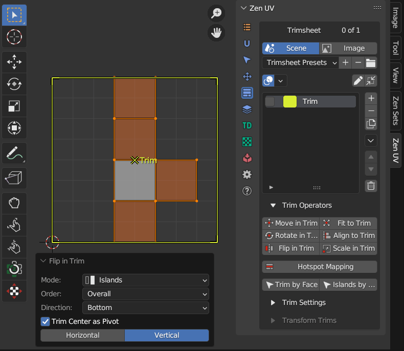

Trim Sheet Operators
Panel

Mesh Selection Mode
The mode defines the behaviour what part of mesh will be transformed
Islands
Islands that has selected mesh elements are transformed in the mode
 |
|---|
Processing Order
One By One
Islands are processed with separate pivots
 |
|---|
Overall
All islands are processed with the same pivot
 |
|---|
Selection
Only selected mesh elements are transformed in the mode
 |
|---|
Move In Trim
Move islands inside active trim. Islands outside active trim will be ignored if Lock in Trim option is set
Rotate In Trim
Rotate islands inside active trim
Flip In Trim
Flip islands relative to the center of active trim
|  |
|---|
{kind=link}
Fit To Trim
Fit islands into active trim
 |
|---|
Align To Trim
Align islands to active trim
 |
|---|
Scale In Trim
Scale in active trim. Islands outside active trim will be ignored if Lock in Trim option is set
 |
|---|
Hotspot Mapping
Hotspot Mapping is a UV mapping method that compares the parameters of Islands and Trims and makes automatic mapping based on the given settings.
Follow the link to find more information about Hotspot Mapping.
Select Trim By Face
Select and activate trim by selected face
Select Islands By Trim
Select islands inside active trim
Directional Hotspot Mapping

Directional Hotspot Operator
Hotspot mapping using island normal vector.
Properties

- Mode – Defines which trims will be used for mapping.
- All Trims – Uses all available trims.
- Selected Trims – Uses only the selected trims.
- Orient – Determines island rotation before mapping.
- As Is – No rotation applied.
- Orient to World – Aligns the island to the world axis.
- Orient to Axis – Auto-orients the island to the nearest axis.
- Threshold – Defines how precisely the island’s normal must match the trim’s normal for mapping.
- Keep Proportion – Prevents stretching or squashing by maintaining the original aspect ratio of the UV islands.
- Allow Location Variation – If enabled, islands may be placed in different trims that have similar size and orientation parameters. If disabled, islands are strictly mapped to their assigned trims.
- Allow Scaling – Automatically scales UV islands to fit the target trim while preserving proportions (unless ‘Keep Proportion’ is disabled).
- Select Processed – After applying the mapping, this option highlights the UV islands that were successfully adjusted to trims.
-
Seed – Sets a seed value for the randomization algorithm, ensuring consistent placement variations of islands in similar trims.
-
Orient - Perform some Island rotation before Hotspotting
Normals To Trim
Retrieve the normal vector from the selected face and apply it to the active trim.
Properties

- Average Normal Value – If enabled, calculates the average normal when multiple faces are selected.
If disabled, only the normal of the active face will be applied to the trim.